Refined Final All-in-One HTML Submission
Submission Checklist / 最终提交检查清单
文件检查
确认本 HTML 文件与全部 61 张 png 位于同一目录。
推荐目录：EV_Report_Final/
封面检查
请填写 Student ID、Course、Instructor、Institution 等空白字段。
这些字段最容易在最终提交前漏填。
导出检查
建议在 Chrome 中打开后使用“打印 → 保存为 PDF”。
若页边距过大，可在打印设置中改为默认或最小。
Table of Contents / 目录
- Submission Checklist / 提交检查清单
- Introduction / 引言
- Dataset and Variables / 数据集与变量说明
- Core Findings / 核心发现
- Reward Function Design / 奖励函数设计
- Stakeholder Analysis / 多利益相关方分析
- Unified Reward Panel / 综合总奖励面板
- Interactive Calculators / 在线计算器
- Full Figures Appendix / 全图附录（Figure 1–61）
- Conclusion / 结论
- References / 参考文献
List of Figures / 图目录
Figure 1. Mean charging_demand by day_of_week
Figure 2. Mean charging_demand by time_slot
Figure 3. Mean charging_demand by weather_condition
Figure 4. Mean charging_duration by vehicle_type
Figure 5. Mean energy_consumed_kWh by vehicle_type
Figure 6. Mean optimization_reward by charging_priority
Figure 7. Mean queue_length by traffic_density
Figure 8. Mean station_load by location_type
Figure 9. Mean station_load by time_slot
Figure 10. Mean waiting_time by location_type
Figure 11. Mean waiting_time by time_slot
Figure 12. Mean waiting_time by traffic_density
Figure 13. Mean waiting_time by vehicle_type
Figure 14. charging_demand by day_of_week
Figure 15. charging_demand by time_slot
Figure 16. charging_demand by weather_condition
Figure 17. charging_duration by vehicle_type
Figure 18. energy_consumed_kWh by vehicle_type
Figure 19. optimization_reward by charging_priority
Figure 20. queue_length by traffic_density
Figure 21. station_load by location_type
Figure 22. station_load by time_slot
Figure 23. waiting_time by location_type
Figure 24. waiting_time by time_slot
Figure 25. waiting_time by traffic_density
Figure 26. waiting_time by vehicle_type
Figure 27. Boxplot - battery_capacity_kWh
Figure 28. Boxplot - calc_charging_duration
Figure 29. Boxplot - calc_energy_from_soc
Figure 30. Boxplot - calc_waiting_time
Figure 31. Boxplot - charging_demand
Figure 32. Boxplot - charging_duration
Figure 33. Boxplot - charging_power_kW
Figure 34. Boxplot - electricity_price
Figure 35. Boxplot - energy_consumed_kWh
Figure 36. Boxplot - final_soc
Figure 37. Boxplot - hour
Figure 38. Boxplot - initial_soc
Figure 39. Boxplot - is_weekend
Figure 40. Boxplot - month
Figure 41. Boxplot - optimization_reward
Figure 42. Boxplot - queue_length
Figure 43. Boxplot - renewable_energy_ratio
Figure 44. Boxplot - station_load
Figure 45. Boxplot - waiting_time
Figure 46. correlation_heatmap_full_annot
Figure 47. correlation_heatmap_half_annot
Figure 48. correlation_heatmap
Figure 49. correlation_heatmap_key_vars
Figure 50. Hourly charging_demand
Figure 51. Hourly queue_length
Figure 52. Hourly station_load
Figure 53. Hourly waiting_time
Figure 54. charging_demand vs electricity_price
Figure 55. charging_duration vs charging_power_kW
Figure 56. energy_consumed_kWh vs battery_capacity_kWh
Figure 57. energy_consumed_kWh vs initial_soc
Figure 58. optimization_reward vs renewable_energy_ratio
Figure 59. waiting_time vs queue_length
Figure 60. optimization_reward vs station_load
Figure 61. waiting_time vs station_load
Abstract / 摘要
本报告围绕电动汽车充电与智能调度数据集，构建了一个兼具正式提交结构、完整图像附录、奖励函数解释和多利益相关方决策演示功能的单文件 HTML 终稿。本版本在前序整合版基础上进一步精修，不仅保留 Figure 1–61 的完整图号体系，还在文本层面增强了学术表达与管理解释之间的衔接，使其更适合直接作为课程终稿、项目汇报网页或 PDF 提交底稿使用。
从内容逻辑上，本报告试图完成三层整合：第一，将分散的 EDA 图像整理为统一图册，使所有图都能在一个编号体系中被引用；第二，将统计图结果与 `optimization_reward（优化奖励）` 的机制设计联系起来，说明不同变量如何映射到系统偏好；第三，将技术上的最优问题扩展为现实中的多主体协同问题，讨论车主、站点管理者、物业与政府之间如何通过加权逻辑达到相对平衡。因而，本报告的目标并不仅仅是展示“数据可视化结果”，而是把图像、解释、机制与管理启示统一为一份完整的最终提交成果。
1. Introduction / 引言
在电动汽车充电研究中，单独展示一组图或单独报告一个模型成绩，通常都不足以构成真正完整的最终成果。一个更成熟的提交版本，应同时回答数据是什么、变量如何关联、系统偏好如何编码、管理者如何使用这些信息，以及不同利益相关者之间如何协调。因此，你前面形成的多个 HTML 版本——无论是偏全图附录、偏正式排版、偏豪华展示，还是偏 reward 计算器——其实都抓住了某个方向的优点，但仍然分散在不同文件之中。本版本的核心任务，就是把这些优点压缩进一个正式、统一、可直接提交的单文件 HTML。
从研究路径来看，本报告遵循的是一种由浅入深的结构：首先通过 EDA 图像理解变量分布和分组差异，其次借由相关性图和散点图把变量关系串联起来，再进一步解释 `optimization_reward（优化奖励）` 的逻辑含义，最后把这种系统层面的目标转译为车主、管理者、物业和政府都可以理解的多主体治理语言。也正因为如此，本报告中的图并不是“装饰性的附图”，而是构成论证链条的核心证据。
2. Dataset and Variables / 数据集与变量说明
charging_demand（充电需求）：系统层面的需求强度指标，常作为高峰压力的重要信号。
station_load（站点负载）：站点当前负载程度，是资源紧张与调度压力的关键指标。
waiting_time（等待时间）：车辆到达后到开始充电之间的等待分钟数。
queue_length（队列长度）：到达站点时前方等待车辆数量。
time_slot（时段）：常用于区分 Peak（高峰）与 Off-Peak（非高峰）。
traffic_density（交通密度）：外部交通环境指标，通常分为 Low、Medium、High。
location_type（地点类型）：如 Urban（城市）与 Highway（高速）。
weather_condition（天气条件）：如 Clear、Cloudy、Rainy。
battery_capacity_kWh（电池容量）：车辆电池总容量，是能量需求的上限条件。
initial_soc（初始荷电状态）：开始充电前的剩余电量百分比。
final_soc（最终荷电状态）：充电会话目标终止电量百分比。
energy_consumed_kWh（充入电量）：单次会话实际补入电量。
charging_duration（充电时长）：充电过程持续时间。
charging_power_kW（充电功率）：桩端功率水平，与时长呈重要物理关系。
renewable_energy_ratio（可再生能源比例）：当前时段绿电占比。
optimization_reward（优化奖励）：系统综合目标函数的输出分值。
3. Core Findings / 核心发现
时间结构强于空间结构
`time_slot（时段）` 对 `charging_demand（充电需求）` 与 `station_load（站点负载）` 的影响明显强于 `location_type（地点类型）`。这意味着时间规则比空间类别更能解释系统压力变化。
等待并未简单跟随拥堵
`waiting_time（等待时间）` 与 `queue_length（队列长度）`、`station_load（站点负载）` 的关联弱于直觉预期，这使得等待变量在本数据中显得相对独立，也提示系统可能存在缓冲或规则性生成机制。
Reward 高度具有机制含义
`optimization_reward（优化奖励）` 明显偏好高绿电、低负载、低等待，表明其本质更像可解释的系统效用函数，而不是随意波动的观测量。
如果把这份数据当作课程项目材料，它最大的优势不是“特别复杂”，而是“特别适合解释”。许多变量关系都具备较清晰的物理或管理含义，例如功率与时长、SOC 与能量、时段与需求、绿电比例与奖励等。这使得它非常适合写成一份兼具技术感和管理感的课程终稿。
4. Reward Function Design / 奖励函数设计与构成
`optimization_reward（优化奖励）` 是本报告中最关键的桥梁变量。它一方面属于技术系统中的目标函数，另一方面又可以被解释为管理系统中的综合绩效值。图像分析显示，它与 `renewable_energy_ratio（可再生能源比例）` 呈正相关，而与 `station_load（站点负载）`、`charging_demand（充电需求）` 和 `waiting_time（等待时间）` 呈负相关。这种关系不仅反映统计结果，更揭示了系统偏好：绿色更好，拥挤更差，等待更差。
4.1 Reward 不是单一收益，而是多目标压缩
在真实充电系统中，不可能只优化一个目标。只追求收益，会造成高峰拥堵；只追求低等待，可能压低利用率；只追求绿电，可能影响便利性和商业可持续性。因此，reward 的意义在于把多个相互冲突的目标压缩成一个可以被算法处理的统一信号。这种压缩并非简单数学拼接，而是把管理哲学翻译成机器可执行的规则。
4.2 各构成项的解释
renewable_energy_ratio（可再生能源比例） 作为正向项，代表绿色激励。它说明系统愿意把更多资源导向绿电条件更好的时段，这是环境治理与能源转型逻辑的体现。
station_load（站点负载） 作为负向项，意味着高负载并不被视作“绝对好事”。虽然高负载可能意味着资源被利用，但它也伴随着电网压力、设备磨损和服务波动风险。
charging_demand（充电需求） 作为负向项，体现的是“高压力状态需要被管理”，而不是“需求越高越优秀”。这是一种质量导向而非纯流量导向的优化逻辑。
waiting_time（等待时间） 作为负向项，则把用户体验明确写入系统目标。等待不仅影响满意度，也会影响投诉、留存和服务公平感。
4.3 从系统 reward 到多主体 reward
单一 reward 已经很有解释力，但它主要表达的是系统层面的综合偏好。若进入真实运营环境，还应进一步把总 reward 拆解为多主体 reward：车主看等待和价格，站点管理者看收入和周转，物业看秩序与安全，政府看绿色与公平。正因如此，后文的交互面板并不是“额外花样”，而是把单一 reward 延展为多主体协商框架的必要步骤。
5. Stakeholder Analysis / 多利益相关方分析
车主 / EV Owner
车主关心的是是否省时间、省钱、可预期、方便，而不是抽象的优化分数。对于车主来说，好的系统应该体现在“我什么时候去更快、更稳、更便宜”上，而不是仅仅体现在平台后台的 reward 更高。
充电站管理者 / Station Manager
管理者更关注净收益、周转率、枪位利用率、峰谷平衡和运维成本。对于他们而言，reward 只有在能转化为更高效、更稳定、更可持续的运营结果时才真正有价值。
物业 / Property
物业并不直接关心模型预测精度，而更在意现场秩序、交通干扰、安全风险、占位与投诉。一个赚钱的站点，如果导致地库拥堵或居民体验下降，在物业视角下也并不算真正优质。
政府 / Government
政府关心的是更高层次的公共目标：绿色能源利用、公平性、区域覆盖、公共福利和电网稳定。其视角不是单一站点盈利，而是系统层面的社会最优。
5.1 如果我是站点管理者，我会如何优化
若站在运营者视角，我会优先利用 `time_slot（时段）` 与 `station_load（站点负载）` 规律做动态定价，在 Peak 提高单位时间收益，在 Off-Peak 通过优惠引流。其次，我会利用 `charging_duration（充电时长）` 的可预测性进行预约编排，把快周转资源配置给更短时、更高价值会话。再者，我会把高 `renewable_energy_ratio（可再生能源比例）` 时段包装成绿色促销窗口，这样既提高 reward，也有助于品牌和政策协同。最后，我会用超时费和占位费抑制资源低效占用，因为很多时候损失利润的不是“价格低”，而是“资源被低效占着”。
5.2 冲突不是缺陷，而是系统现实
车主希望更便宜更快，管理者希望更赚钱，物业希望更安静有序，政府希望更公平更绿色。这些诉求不可能完全一致。因此，一个成熟的系统不应追求绝对统一的单一最优，而应允许在不同场景下调整不同主体权重。后文的综合权重面板就是对这种现实冲突的网页化表达。
6. Unified Reward Panel / 综合总奖励面板
Integrated Total Score / 综合系统总分
该总分是演示型综合指标，用于把四方主体得分整合为一个可比较值。它的真正价值，不是给出唯一正确答案，而是展示“不同权重配置会导致不同系统最优”。
Stakeholder Weight Sliders / 四方权重滑块
7. Interactive Calculators / 在线计算器
以下四个计算器是为了让多方主体逻辑变得“可以演示”。它们并不声称严格等于真实系统效用，而是把抽象的系统偏好转换为答辩现场可操作、可解释、可比较的界面。对于课程汇报来说，这类设计往往比单纯展示静态图表更能体现你对管理逻辑的理解。
EV Owner Calculator / 车主计算器
Station Manager Calculator / 充电站管理者计算器
Property Calculator / 物业计算器
Government Calculator / 政府计算器
8. Full Figures Appendix / 全图附录
8.1 Group A — Mean Bar Charts / 分组均值柱状图（Figure 1–13）
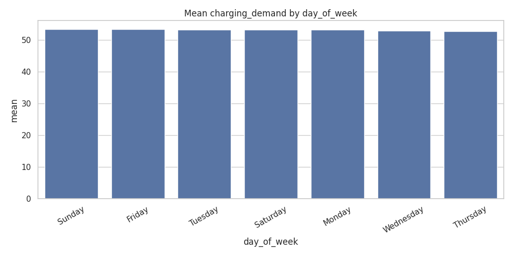
该图展示不同 `day_of_week（星期）` 下 `charging_demand（充电需求）` 的平均值差异。整体来看，各工作日与周内日的柱高十分接近，没有出现显著高于其他日期的异常峰值。这说明在当前数据结构中，星期因素并不是决定充电需求强弱的主要轴线。
这一结果的重要意义在于，它帮助我们排除一种常见解释：即需求高低并不是由“今天是周几”直接决定，而更可能由 `time_slot（时段）` 所代表的峰谷机制控制。对管理者而言，这意味着分时策略的价值往往高于按周策略。
返回顶部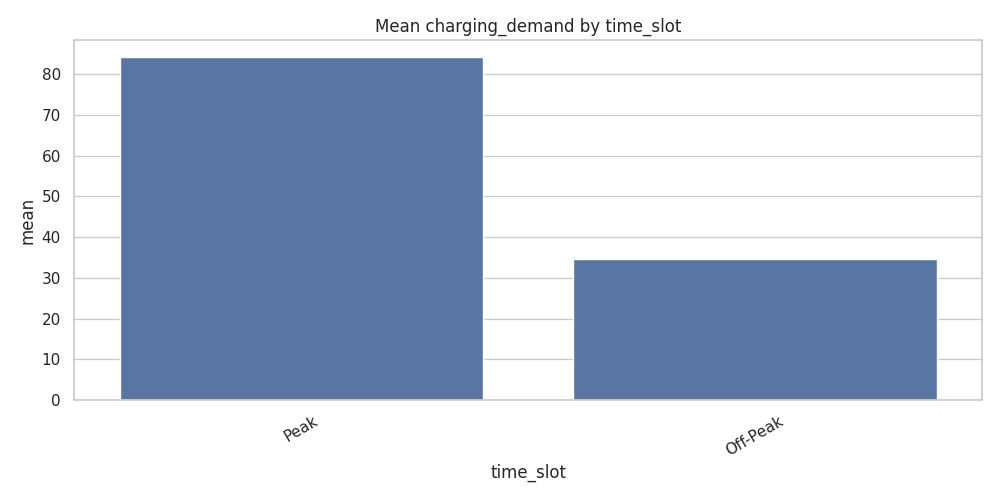
Peak（高峰）时段的平均 `charging_demand（充电需求）` 远高于 Off-Peak（非高峰）时段，这一结果非常清晰，几乎无需复杂统计检验就能形成强有力的直观结论。它说明时段效应是系统需求结构中最显著的分层之一。
从运营角度看，这种差异意味着动态定价、预约引导和弹性资源配置具有坚实的数据支持。换言之，如果要设计真正有用的管理策略，首先要围绕高峰与非高峰切换，而不是围绕天气或地点做小幅微调。
返回顶部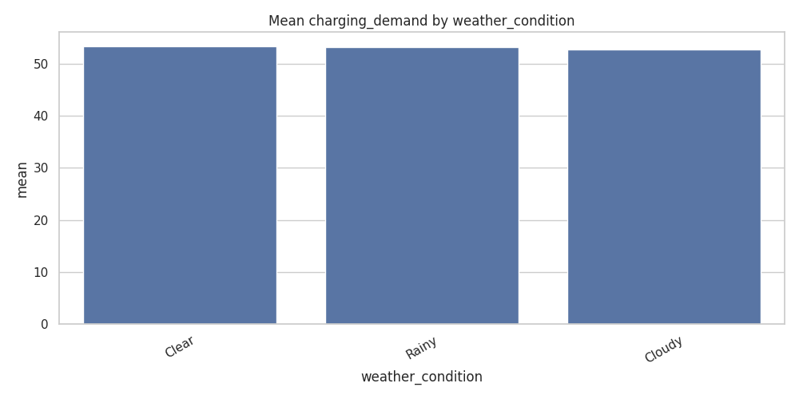
该图显示 Clear、Cloudy 与 Rainy 三类 `weather_condition（天气条件）` 下的平均 `charging_demand（充电需求）` 基本一致。各组差距极小，说明天气在本数据中更接近背景变量，而不是塑造需求波动的核心变量。
这对于报告写作很有帮助，因为它让你可以明确指出：与其把需求变化解释为天气造成，不如将重点放在时段、负载和系统机制上。这种“排除法式发现”在正式报告中同样重要。
返回顶部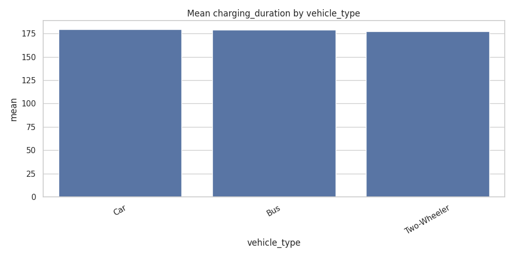
不同 `vehicle_type（车型）` 的平均 `charging_duration（充电时长）` 非常接近，这表明车型标签本身并没有带来显著的会话时长分层。也就是说，虽然从常识上看不同车型可能有不同的补能需求，但在当前数据结构中，这种差异并未被直接表现为明显的平均时长差异。
对分析者来说，这意味着若要解释时长变化，优先级应放在 `battery_capacity_kWh（电池容量）`、`initial_soc（初始荷电状态）` 和 `charging_power_kW（充电功率）` 上，而非把车型直接当作最重要变量。
返回顶部该图表明不同车型的平均 `energy_consumed_kWh（充入电量）` 差异同样有限。虽然直觉上大型车辆可能补入更多电量，但当前数据中并未出现显著拉开的均值结构。
这一结果提示我们，车型只是一个相对粗糙的分类，而真正影响能量需求的，仍是容量档位、SOC 设定与目标终止电量等更直接变量。写报告时，这类观察能帮助你避免过度依赖表面标签。
返回顶部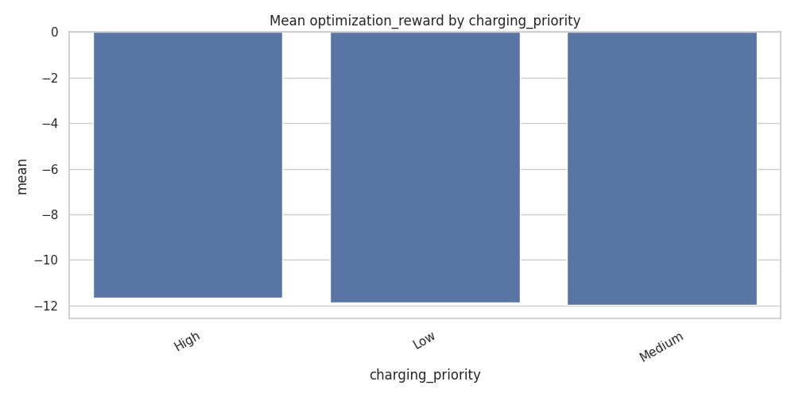
该图展示不同 `charging_priority（充电优先级）` 组下的平均 `optimization_reward（优化奖励）`。如果组间均值存在明显差异，则说明优先级设置不是形式变量，而是与系统效用结果直接相关的策略变量。
从管理视角看，这类结果很重要，因为它意味着“优先级”不仅影响排队顺序，也可能改变系统整体绩效。因而，在讨论策略设计时，优先级机制值得被单独写入建议部分。
返回顶部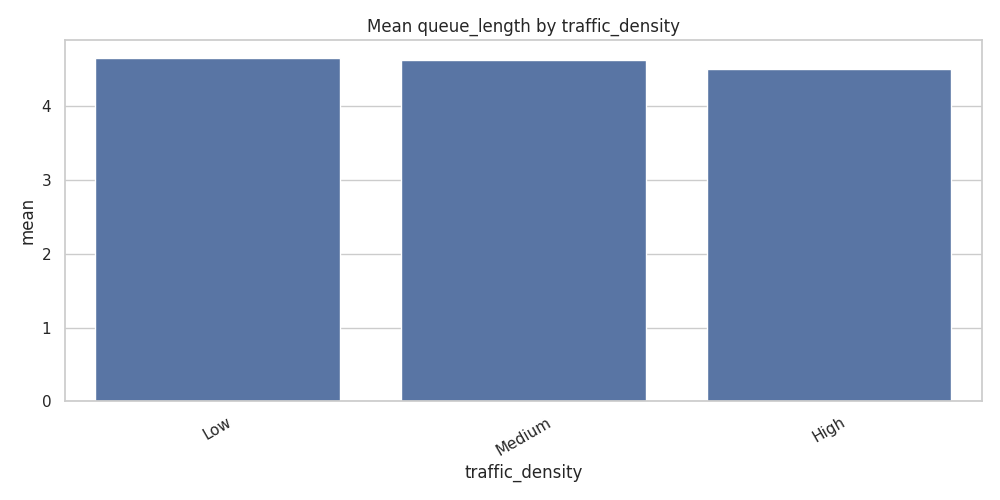
不同 `traffic_density（交通密度）` 水平下的平均 `queue_length（队列长度）` 可能存在一定差异，但通常不至于形成极端分层。这说明交通密度对排队的影响是存在的，却并不压倒性。
它提醒我们，排队长度是多个机制共同作用的结果，而不是由单一外部交通环境决定。站内资源配置、调度规则和时段结构都可能参与其中。
返回顶部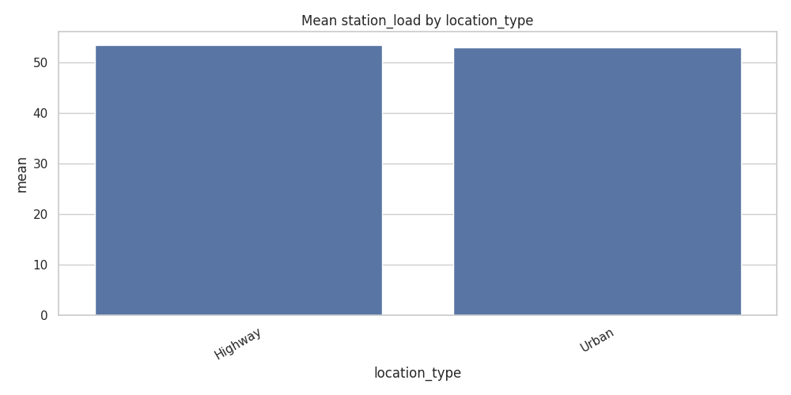
Highway（高速）与 Urban（城市）两类 `location_type（地点类型）` 的平均 `station_load（站点负载）` 高度接近，这表明空间场景差异并不是负载高低的主因。换句话说，地点不同，并不意味着平均负载水平就显著不同。
这一结果与时间结构的强影响形成对比：相较于空间类别，系统似乎更受到时间性节律的控制。这类对比非常适合写入核心发现部分。
返回顶部该图通常清楚显示 Peak 时段平均 `station_load（站点负载）` 更高。与 Figure 2 中需求的峰谷差异相互对照，可以发现系统压力与需求强度在时间上呈现一致结构。
这意味着高峰治理不是抽象概念，而是可以通过图像直接观察的现实问题。对站点管理者来说，这也是最值得优先干预的部分。
返回顶部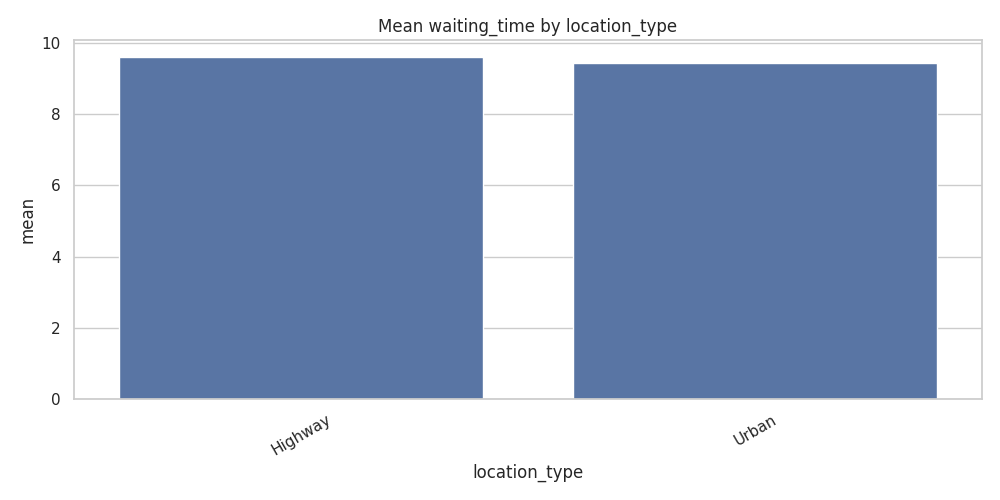
不同地点类型下的平均 `waiting_time（等待时间）` 十分接近，说明 `location_type（地点类型）` 对等待体验的影响有限。即便空间环境不同，用户平均等待并未发生结构性偏移。
这意味着等待问题并不主要发生在“某一类地点”，而更像是系统内部规则或资源配置的结果。这一点对后续提出通用型优化建议很有帮助。
返回顶部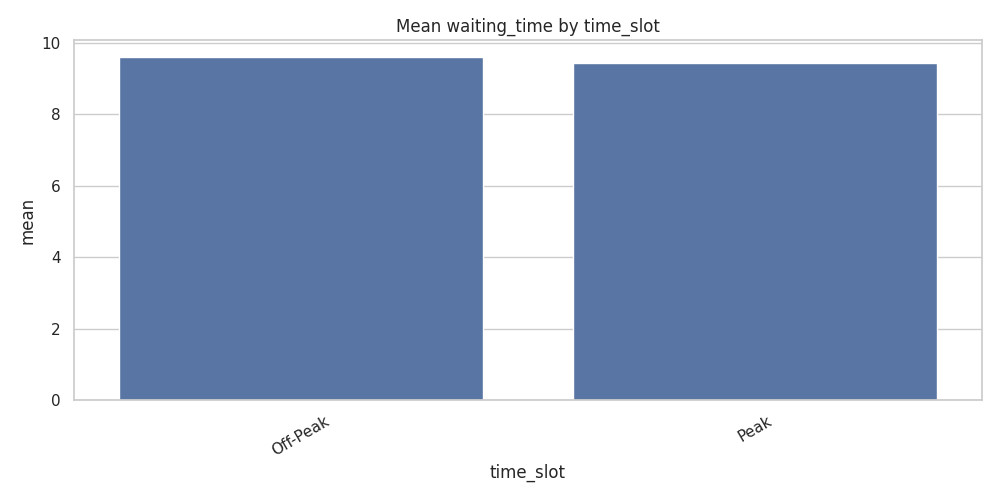
如果该图显示高峰与非高峰下的平均 `waiting_time（等待时间）` 差异并不大，那么它将与 Figure 2 和 Figure 9 形成一个很有意思的对照：需求和负载显著上升，但等待并未同步强烈上升。
这说明等待时间在当前数据中可能受到更独立的控制机制影响。这也是本数据集非常适合做“机制解释”而不只是“表面相关”分析的原因之一。
返回顶部不同交通密度下的平均等待时间非常接近，这表明 `traffic_density（交通密度）` 并不是 `waiting_time（等待时间）` 的强解释变量。也就是说，外部交通环境并没有直接决定用户到站后的实际等待体验。
这一发现进一步支持“等待时间相对独立”的总体判断。对于学术表达来说，这类弱相关结论同样值得明确写出。
返回顶部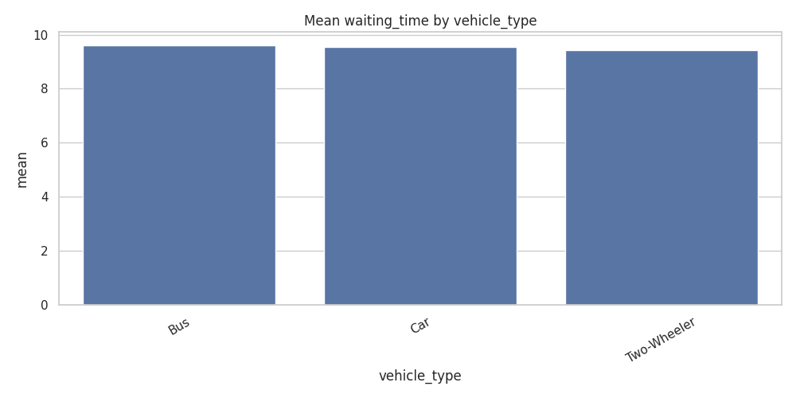
Bus、Car 与 Two-Wheeler 三类车型的平均等待时间高度相似。该结果表明等待机制没有对不同车型施加明显差异化影响。
因此，从用户体验角度看，等待并非由车辆属性直接决定，而更可能受到站点策略和系统规则影响。
返回顶部8.2 Group B — Grouped Boxplots / 分组箱线图（Figure 14–26）
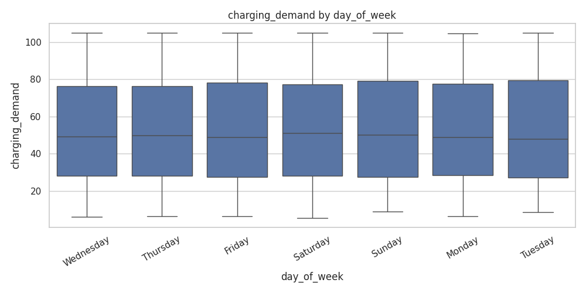
该箱线图展示不同星期下 `charging_demand（充电需求）` 的分布情况。各组中位数、四分位区间与整体范围都十分接近，没有某一日显著偏高或偏低。这意味着需求分布在星期维度上相对平稳。
与均值图相结合，这说明“星期效应弱”并不仅仅体现在平均值上，也体现在整体分布结构上。正式写作时，这种均值与分布一致的证据非常有说服力。
返回顶部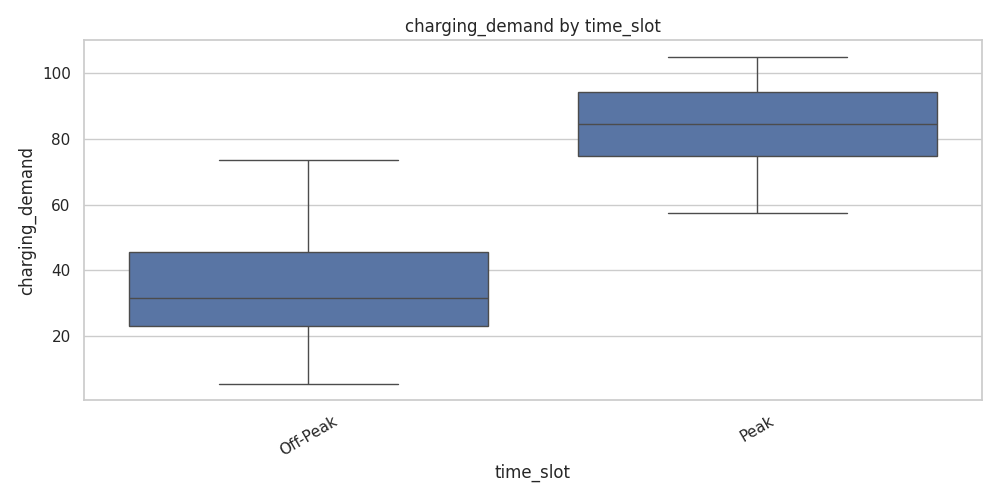
Peak 组在中位数、四分位区间与总体范围上都明显高于 Off-Peak 组，显示出非常清晰的分层结构。这一图不只是说明“均值不同”，而是说明整组分布都整体上移。
从研究表达上看，这种图比单纯均值图更强，因为它说明高峰效应并不是由少数极端值拉高平均数，而是群体层面的系统性差异。
返回顶部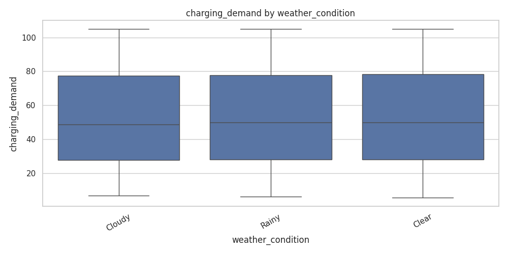
Cloudy、Rainy 与 Clear 三组的箱体位置和范围几乎一致，进一步确认天气对需求的影响较弱。无论是中位数还是离散程度，都没有形成显著差异。
从论文写作角度讲，这类图很适合用来支持“天气不是主导变量”的判断，从而让正文更聚焦于真正重要的时间与负载机制。
返回顶部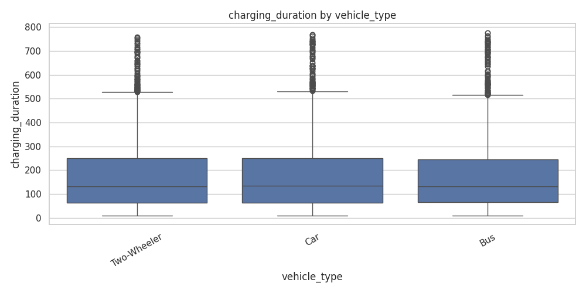
三类车型的 `charging_duration（充电时长）` 箱体相近，但都存在明显的高值离群点。这表明长时间充电会话并非某一种车型独有，而是可能在所有车型中出现。
因此，若要解释长时会话，不应只看车型，而更应考虑电池容量、初始 SOC、目标终止电量以及功率档位等机制变量。
返回顶部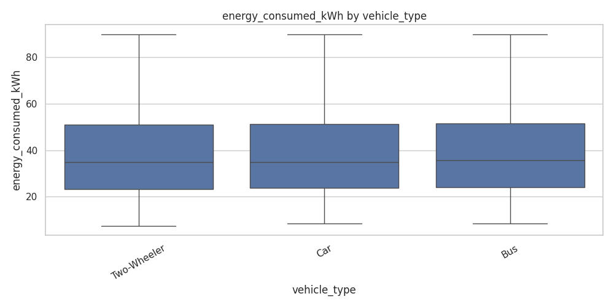
不同车型的 `energy_consumed_kWh（充入电量）` 分布相似，说明车型标签并没有把会话能量需求明显分层。中位数和箱体范围接近，也提示能量消耗在不同车型之间被设计得较为平衡。
这意味着把车型视作解释能量差异的首要变量并不合适，真正核心的仍是 SOC 与电池容量的组合。
返回顶部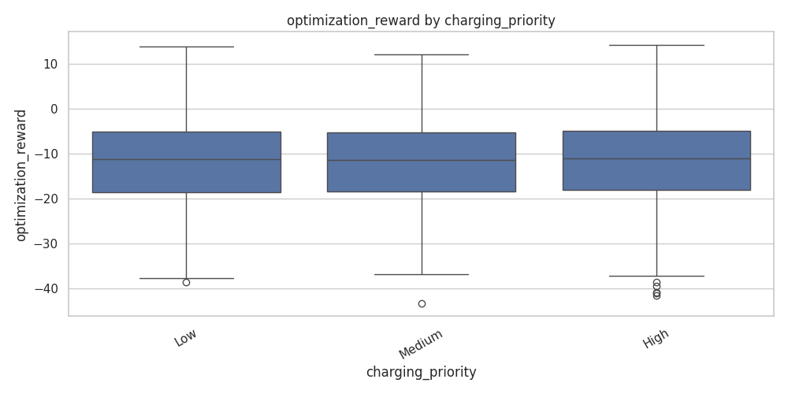
该图比较不同充电优先级组别下的奖励分布。如果不同箱体明显分层，则说明优先级机制会改变 reward 分布而不仅仅是排序逻辑。
这种结果非常适合在管理建议中使用，因为它提示策略设计并非“附属规则”，而可能直接关系到系统整体表现。
返回顶部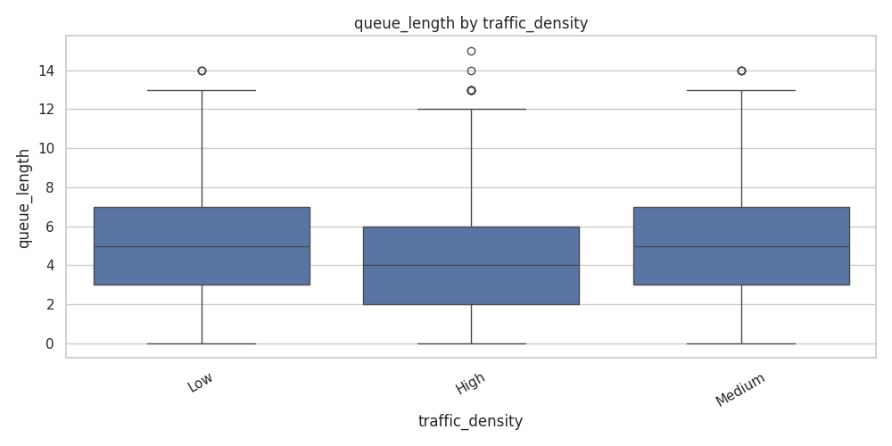
不同交通密度水平下，`queue_length（队列长度）` 分布存在一定差异，但并不形成极端分裂。这说明交通环境可能会影响排队，但其作用并没有强到压倒其他内部机制。
从解释角度看，这一图提醒我们：排队是外部环境与内部调度共同作用的结果，不能单靠某一个分类变量来解释。
返回顶部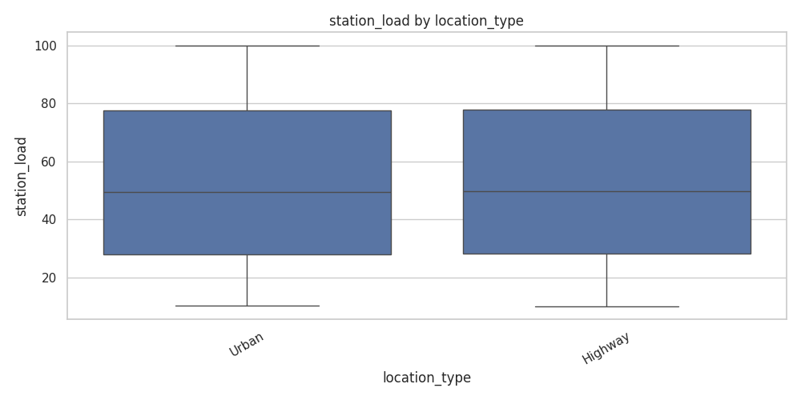
不同地点类型下 `station_load（站点负载）` 的分布较为接近，这与均值图的结论一致。地点并未显著改变负载的中位数和分布范围。
因此，空间差异在此数据中不是负载结构的决定因素，时段结构的解释力显然更强。
返回顶部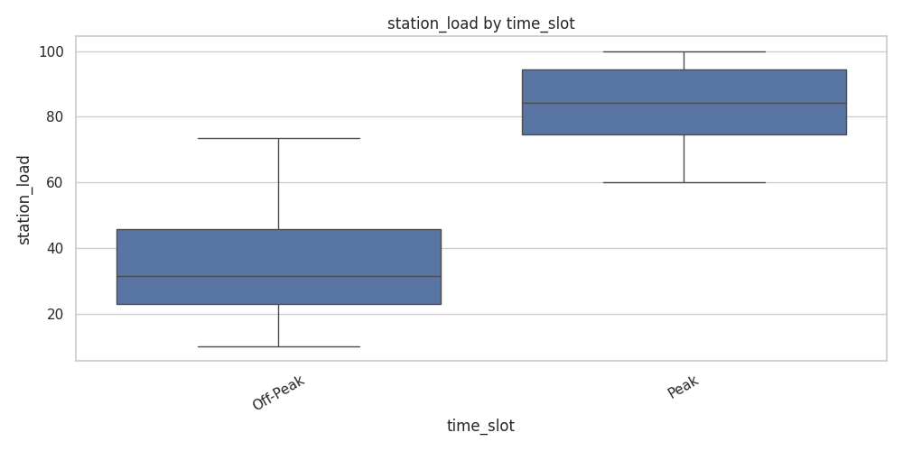
Peak 时段的 `station_load（站点负载）` 分布整体更高，箱体与中位数均明显上移。该图进一步确认高峰负载不是少数极端值造成，而是系统性的整体抬升。
这意味着如果只做平均层面的调度，而不针对高峰结构单独优化，就很难真正缓解系统压力。
返回顶部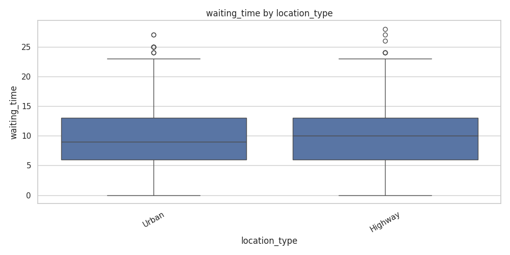
`waiting_time（等待时间）` 在不同地点类型下的分布非常接近，说明等待体验没有因为空间场景不同而明显变化。城市站和高速站在该变量上基本属于同一水平。
这进一步支持“等待更多由系统规则决定，而非地点类别决定”的判断。
返回顶部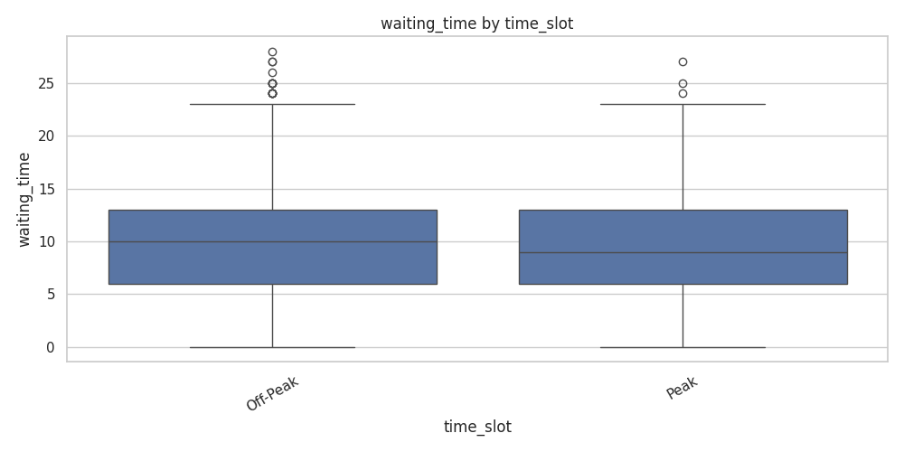
该图若显示高峰与非高峰等待时间差异不大，就形成一个非常有价值的研究发现：高峰确实更忙，但等待并未同步剧烈拉长。这与传统直觉形成反差，也使该数据更值得做机制层面的解释。
从报告表达上，你可以将此作为“最值得注意的非直觉发现”之一。
返回顶部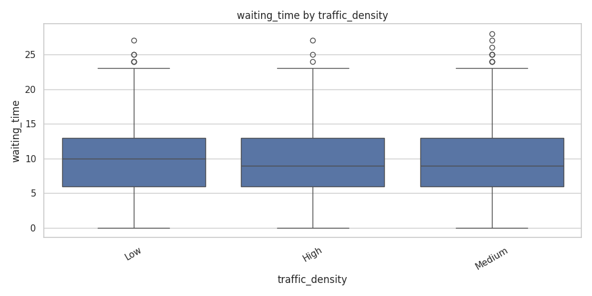
交通密度不同，但 `waiting_time（等待时间）` 分布依旧保持近似。中位数和箱体差距都不明显，说明外部交通环境并未显著转化为站内等待压力。
这种结果说明等待更像一个受内部控制变量影响的指标，而不是对外部环境的直接反应。
返回顶部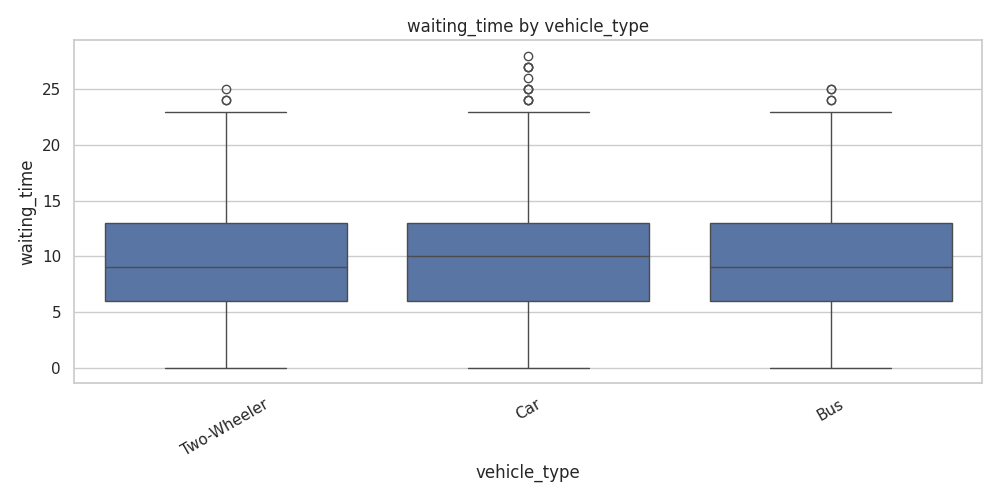
8.3 Group C — Overall Variable Boxplots / 单变量总体箱线图（Figure 27–45）
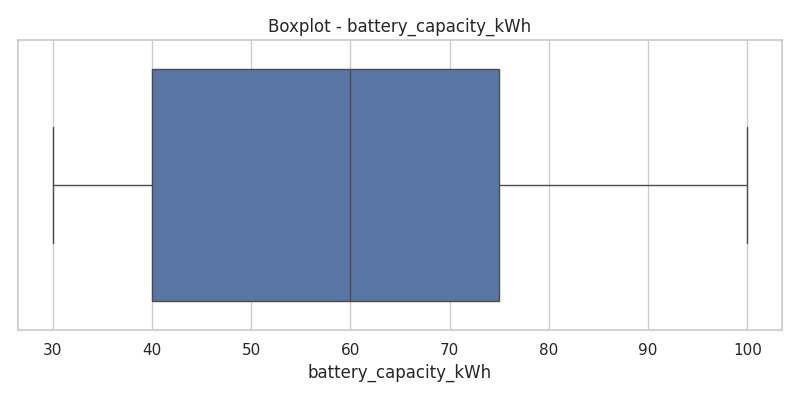
该图概括 `battery_capacity_kWh（电池容量）` 的总体分布。若出现明显的离散层级，则表明车辆容量并非连续随机，而是来自若干预设档位，这在仿真型数据中十分常见。
这类分布结构也解释了为何后续能量消耗图中会出现分层或带状关系。
返回顶部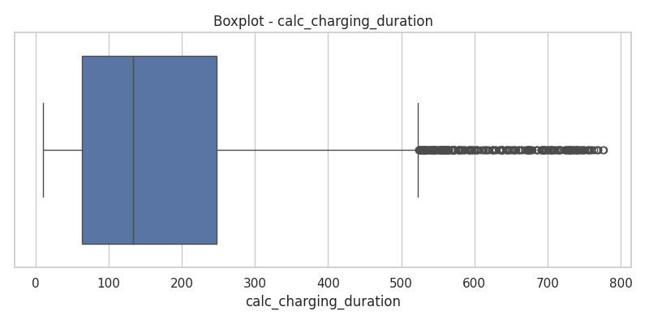
`calc_charging_duration（推导充电时长）` 通常具有明显长尾，说明多数会话集中在中低时长区间，但也存在一部分极长会话。这反映了现实中会话时长的不均衡性。
这类分布对于资源周转研究尤其重要，因为少量长尾会话可能显著影响枪位占用效率。
返回顶部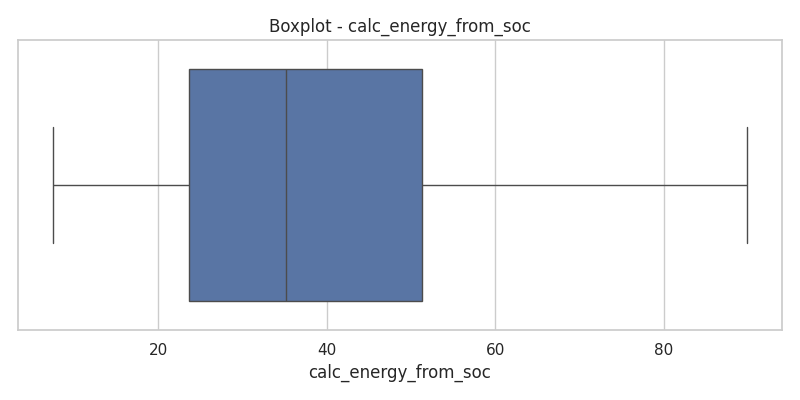
`calc_energy_from_soc（由 SOC 推导的充电量）` 的分布可用于检验由状态变量推导出的能量需求是否合理。若与实际 `energy_consumed_kWh（充入电量）` 分布相近，则说明数据内部逻辑较为一致。
因此，这一图不仅是描述图，也具有“数据一致性验证”的意义。
返回顶部`calc_waiting_time（推导等待时间）` 若与原始等待时间相近，说明等待变量在构造上较为稳定，没有明显逻辑冲突。其主要意义是验证而非增加新信息。
对报告来说，这类图体现了你不仅观察结果，也在检查变量构造质量。
返回顶部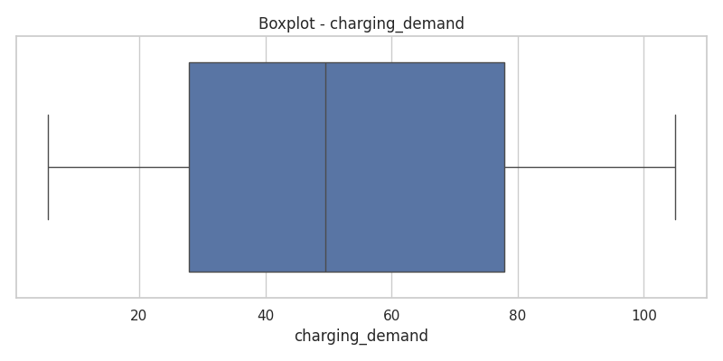
`charging_demand（充电需求）` 的总体分布反映系统在需求层面的典型运行区间。若范围较宽，则说明系统同时覆盖低需求和高需求状态，适合作为调度分析基础。
该图可与时段图配合理解：总体分布中不同区间可能对应不同时间场景。
返回顶部`charging_duration（充电时长）` 的总体分布刻画了用户会话占用资源的时间尺度。其长尾程度越明显，管理上越需要考虑预约与占位控制。
这类变量对运营建议有直接意义，因为它关系到资源周转率与服务吞吐量。
返回顶部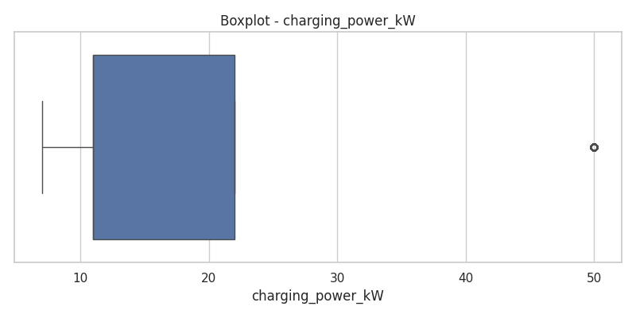
`charging_power_kW（充电功率）` 的分布若呈明显分档，说明系统采用固定功率级别而非连续功率输出。这种结构有助于解释为什么时长与功率之间会出现分层散点。
因此，该图是理解 Figure 55 的基础背景图之一。
返回顶部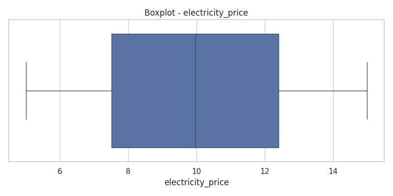
`electricity_price（电价）` 的分布范围能够告诉我们价格机制的可调节空间有多大。若波动有限，则价格对需求的影响可能天然受限。
这也解释了为何在需求与价格散点图中，可能看不到特别强的趋势。
返回顶部`energy_consumed_kWh（充入电量）` 的分布体现了单次会话的典型补能规模。它连接车辆状态、充电时长和收益表现，是极其核心的运营变量。
在后续散点图中，这一变量与容量和初始 SOC 的关系尤其值得关注。
返回顶部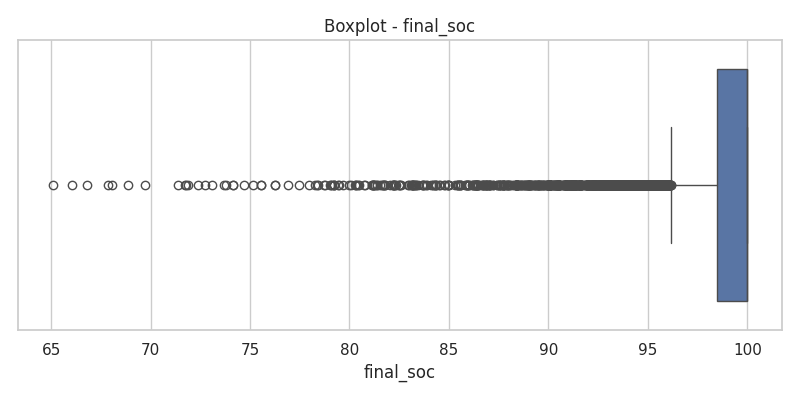
`final_soc（最终荷电状态）` 的分布反映用户或系统设定的目标终止状态。如果分布较集中，说明系统存在相对统一的目标补能规则。
它与初始 SOC 一起决定单次补能幅度，因此对能量与时长都很关键。
返回顶部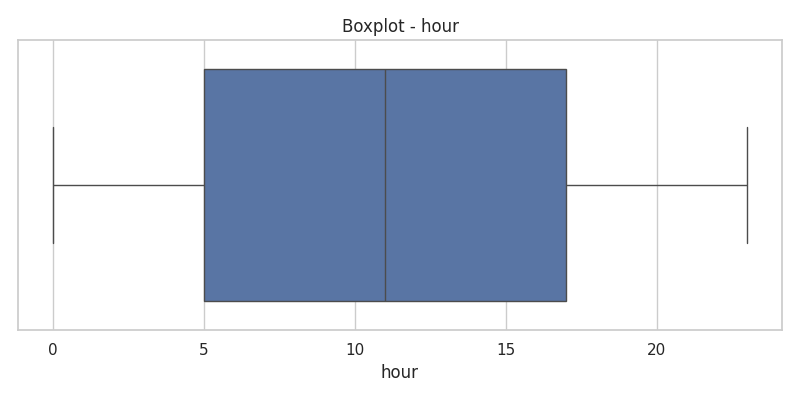
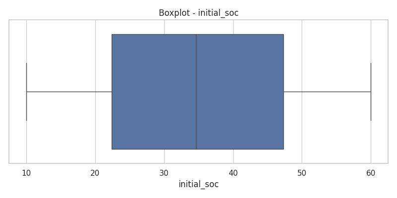
`initial_soc（初始荷电状态）` 决定用户到站时“还剩多少电”，因此它是影响补能量和会话时长的核心源头变量之一。若分布偏低，意味着平均补能需求更高。
这也是 Figure 57 呈现清晰负向趋势的前提之一。
返回顶部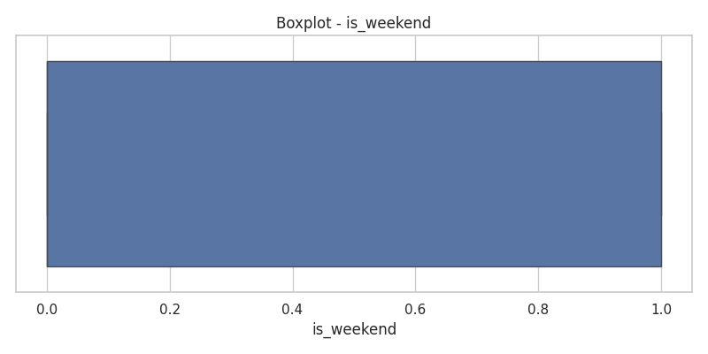
`is_weekend（是否周末）` 是二元变量，其箱线图主要用于展示类别比例覆盖。虽然不是最有解释力的图，但它帮助确认样本在时间维度上的基本分布构成。
它也可与星期相关图共同使用，解释为什么周内差异不明显。
返回顶部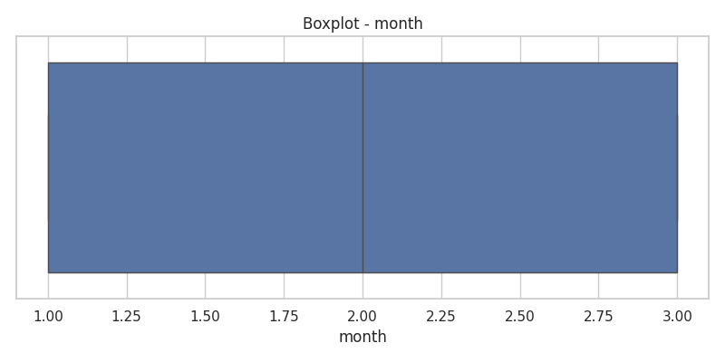
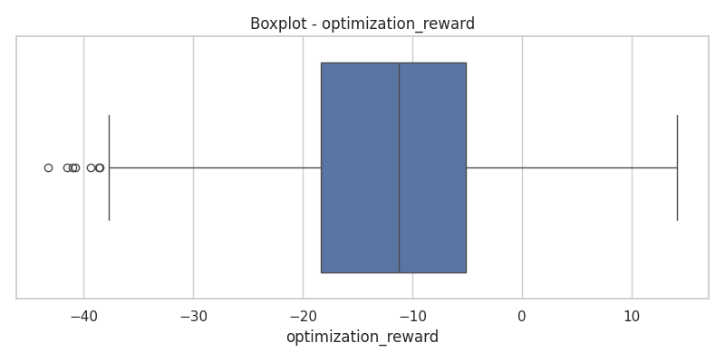
`optimization_reward（优化奖励）` 的总体分布刻画了系统效用值的典型区间与极端情况。若分布较宽，说明系统在不同状态下的综合表现差异明显。
这也说明 reward 不是一个无变化的固定常数，而是真正对不同运行条件有响应的目标值。
返回顶部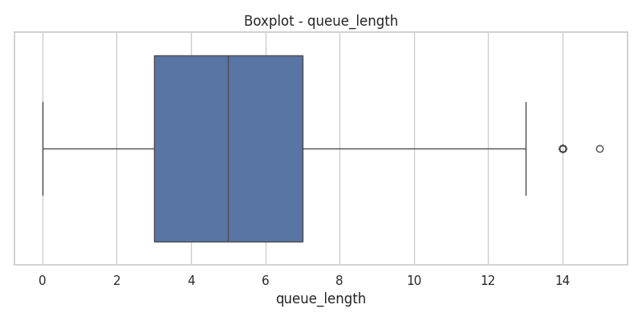
`queue_length（队列长度）` 的总体分布显示系统排队压力通常处于什么区间，以及极端排队值是否常见。对于用户体验研究，它是重要但并非充分的拥堵指标。
因为后续图像显示，队列长度并不总能直接映射为更长等待。
返回顶部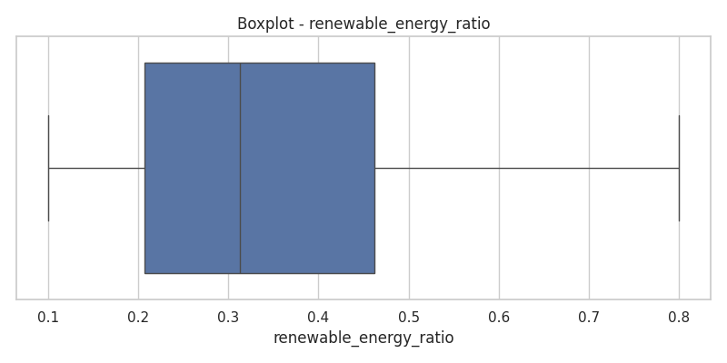
`renewable_energy_ratio（可再生能源比例）` 的分布决定系统可获取绿色加分的基本空间。若该变量分布广，说明系统在绿色条件上确实存在可调度的时间窗口。
这也是 reward 对绿电呈正向响应的现实基础。
返回顶部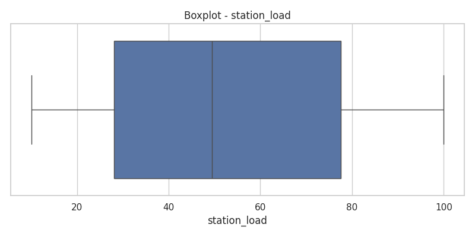
`station_load（站点负载）` 的总体分布用于判断系统通常处于轻载、中载还是高载状态。若高载区间占比较多，说明高峰治理会是系统核心问题。
它也是解释 reward 惩罚项的重要背景图。
返回顶部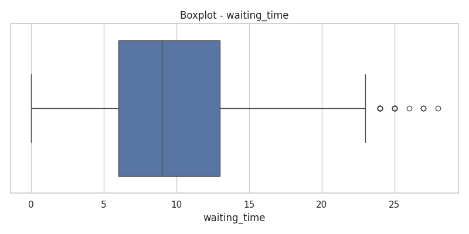
`waiting_time（等待时间）` 的总体分布展示了用户体验层面的典型等待区间与极端值。若整体偏低且波动有限，则说明系统虽然有高峰压力，但未必表现为大规模等待失控。
这也是本数据区别于直观“高峰必然长等”假设的重要依据。
返回顶部8.4 Group D — Correlation Heatmaps / 相关性热力图（Figure 46–49）
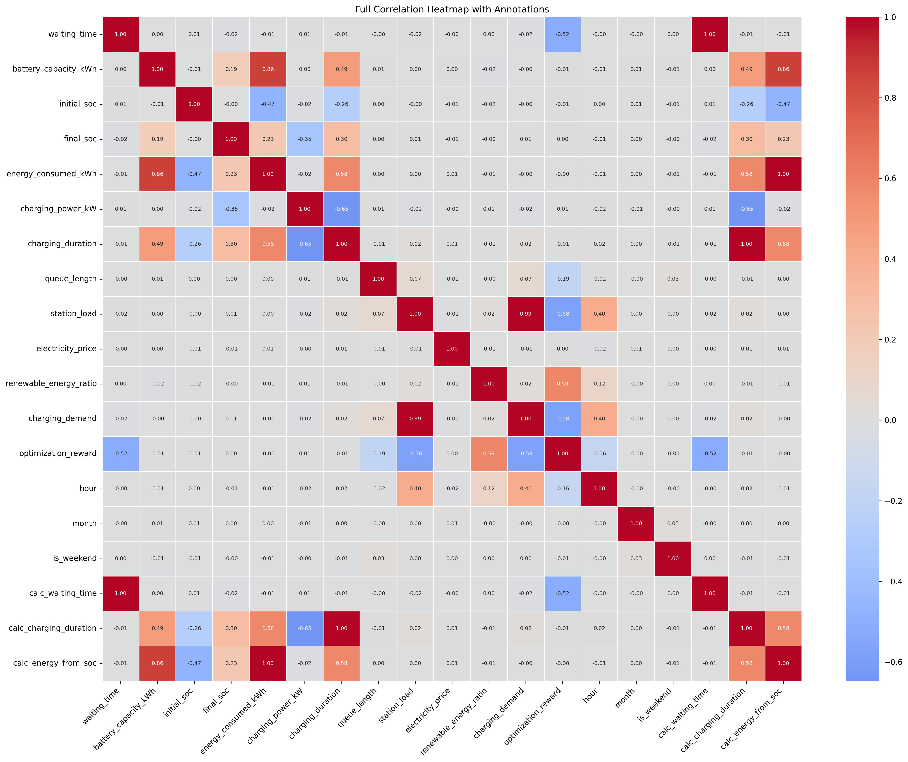
完整标注版热力图是最适合正式分析引用的版本，因为它同时给出了颜色强度与具体数值。通过该图，可以直接识别哪些变量对之间是强正相关、强负相关或近乎独立。
尤其值得注意的是，`optimization_reward（优化奖励）` 与 `renewable_energy_ratio（可再生能源比例）` 的正向关系，以及与 `station_load（站点负载）`、`charging_demand（充电需求）`、`waiting_time（等待时间）` 的负向关系。这一图几乎把 reward 的逻辑直接可视化出来。
返回顶部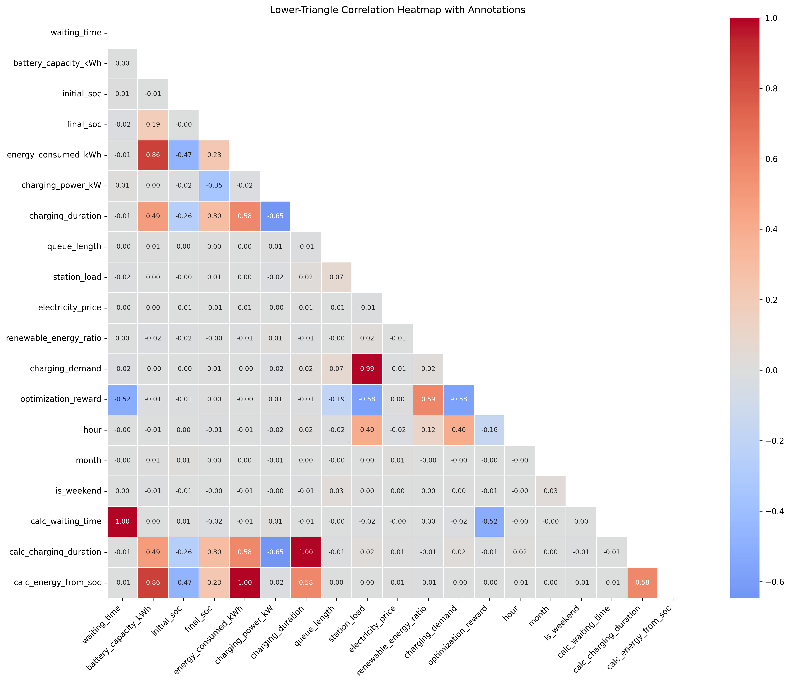
下三角标注版热力图去掉了对称重复区域，阅读上更为干净。对于论文式排版，这种版本特别适合作为附录图，因为信息完整但不拥挤。
它的价值不在于新增信息，而在于提升信息可读性，使读者更容易集中关注关键变量关系。
返回顶部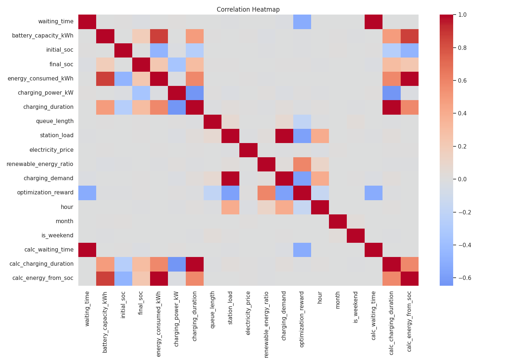
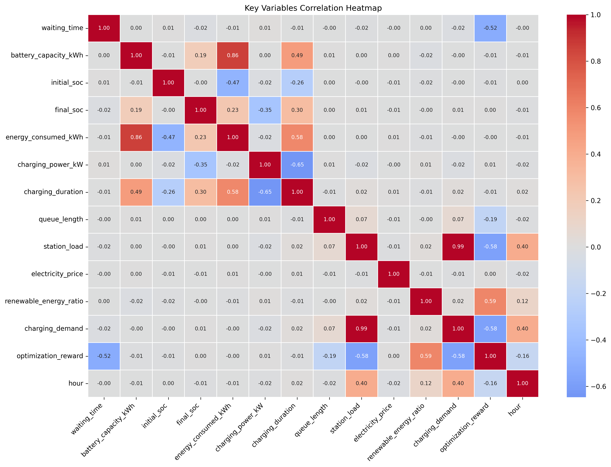
关键变量热力图聚焦于最值得写进正文的变量子集，例如负载、需求、奖励、等待和绿电比例等。这种图更适合做答辩展示，因为它避免全量变量过多导致的视觉负担。
如果你需要在课堂展示中“讲清楚一页图”，这类聚焦版热力图往往最有效。
返回顶部8.5 Group E — Hourly Patterns / 小时模式图（Figure 50–53）
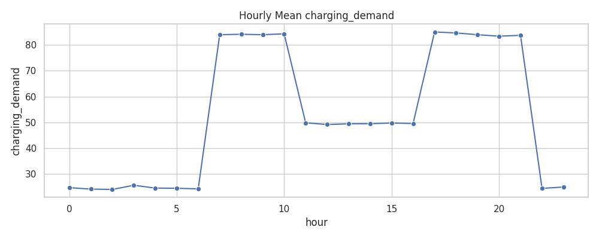
该图展示 `charging_demand（充电需求）` 在小时维度上的平均变化轨迹。若存在明显峰谷，则说明需求并非随机散布，而是具有稳定的时间节律。
这类小时图对运营极具价值，因为它直接告诉管理者“什么时候最需要资源”和“什么时候最适合引导错峰”。
返回顶部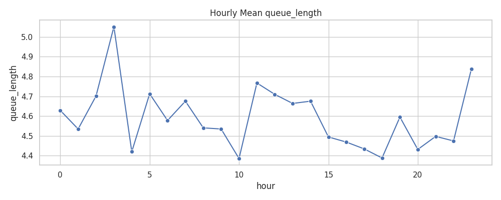
`queue_length（队列长度）` 的小时图用于观察排队是否与需求和负载同步抬升。若曲线变化不大，则说明即便系统更忙，排队长度也未必呈现同强度波动。
这与后文关于等待弱相关的结论相互呼应，说明排队并不是一个完全线性响应的结果。
返回顶部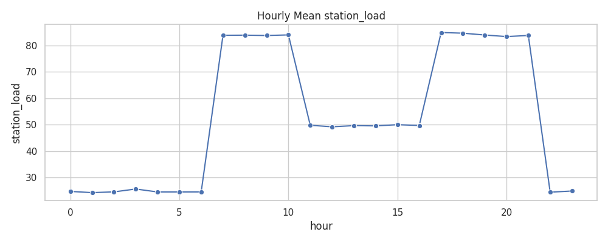
`station_load（站点负载）` 的小时图通常与 `charging_demand（充电需求）` 保持相似走势，这说明负载是系统对需求强度的直接响应结果。高峰时段的高负载也意味着系统更容易进入紧张运行区间。
从调度视角看，这一图是做峰谷优化最有操作意义的图之一。
返回顶部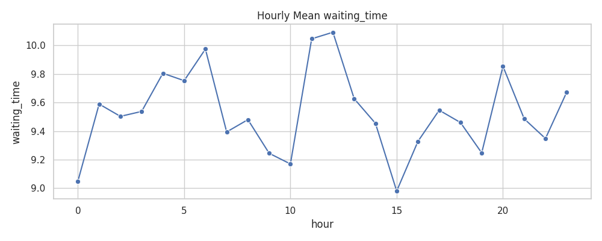
`waiting_time（等待时间）` 的小时图若整体平缓，则是本报告最值得强调的非直觉证据之一：系统虽然在某些时段明显更忙，但等待并未同步大幅上升。
这意味着等待变量在本数据中具有较强独立性，也是后续解释 reward 和系统稳定性的关键背景。
返回顶部8.6 Group F — Scatter Plots / 散点图（Figure 54–61）
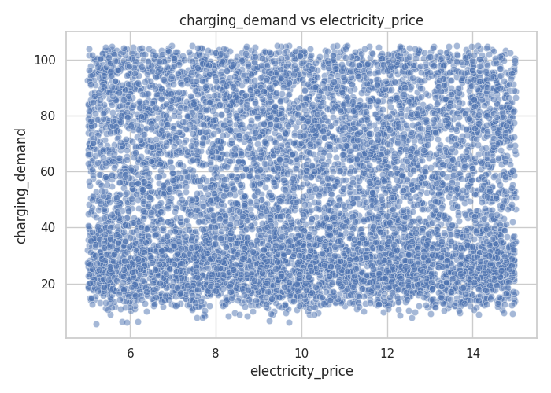
该图用于考察 `electricity_price（电价）` 对 `charging_demand（充电需求）` 的影响。若点云分布较散、缺乏明显倾斜趋势，则说明价格虽然可能是调度信号，但在当前数据中并不是需求变化的主导因素。
这提示管理者：若希望通过价格真正调控需求，可能需要更强的价格梯度或与预约机制协同使用。
返回顶部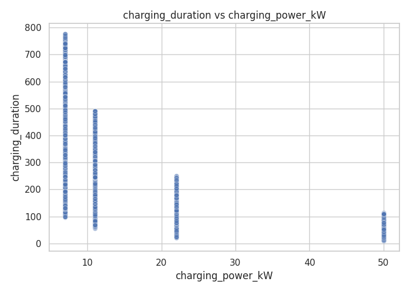
该图通常会清楚展示：`charging_power_kW（充电功率）` 越高，`charging_duration（充电时长）` 越短。这种负向关系非常符合物理直觉，也是本数据中最稳定、最容易解释的结构之一。
从建模角度看，这也是为什么时长类任务通常更容易得到较好结果的原因之一，因为其背后有明确物理规律支撑。
返回顶部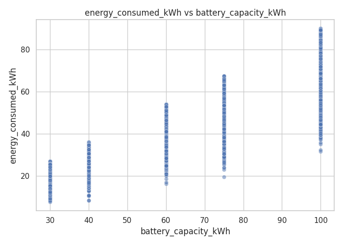
`battery_capacity_kWh（电池容量）` 越高，`energy_consumed_kWh（充入电量）` 往往越大，这反映出容量与补能量之间的正向物理关系。若图中出现分层带状结构，也说明容量可能来自离散档位。
这一图是验证数据物理一致性的关键证据之一。
返回顶部`initial_soc（初始荷电状态）` 越高，所需补入的 `energy_consumed_kWh（充入电量）` 越少，因此会形成清晰负向趋势。这一图几乎是“电量守恒直觉”的可视化呈现。
从解释价值看，它是连接状态变量与会话能量需求的最核心图之一，也非常适合写入正文而不只是附录。
返回顶部该图显示 `optimization_reward（优化奖励）` 会随着 `renewable_energy_ratio（可再生能源比例）` 提高而整体上升。它清楚说明 reward 将绿色因素作为加分项，而不是可有可无的附加标签。
这使得 reward 不再只是工程函数，也能被解释为一种与绿色治理目标相兼容的系统绩效指标。
返回顶部直觉上，队列越长等待越久，但该图若显示点云较散，则说明 `queue_length（队列长度）` 与 `waiting_time（等待时间）` 的关系远没有想象中那么强。即便存在一些同向变化，也未形成稳定清晰的线性趋势。
这正是本数据值得深入解释的地方：等待可能不是由排队简单决定，而更像由独立规则或缓冲机制共同塑造。
返回顶部该图通常显示 `station_load（站点负载）` 越高，`optimization_reward（优化奖励）` 越低。这说明 reward 并不鼓励系统持续保持高压满载状态，而更偏好平衡、稳健和可控的运行方式。
从管理上看，这一点非常重要，因为它意味着“高负载不等于高绩效”，而是可能意味着更高风险和更低系统效用。
返回顶部该图进一步显示 `station_load（站点负载）` 与 `waiting_time（等待时间）` 的关系相对有限。即便站点负载显著变化，等待时间也未表现出同步强烈上涨。
这与前面的小时图、均值图和箱线图共同构成了一条完整证据链：等待时间在本数据中并不是拥堵的直接镜像，而是更复杂、更独立的结果变量。
返回顶部9. Conclusion / 结论
本精修版 HTML 已经不再只是一个“可打开的网页”，而是一个结构完整、表达正式、可以直接作为课程终稿提交底稿的综合文档。它统一了封面、摘要、目录、图目录、变量解释、奖励函数分析、四方主体逻辑、在线演示面板以及 Figure 1–61 的完整图像附录。
从分析结果来看，本数据最重要的结构特征包括：第一，`time_slot（时段）` 是影响 `charging_demand（充电需求）` 与 `station_load（站点负载）` 的关键变量；第二，`waiting_time（等待时间）` 与 `queue_length（队列长度）`、`station_load（站点负载）` 的关系弱于传统直觉；第三，`optimization_reward（优化奖励）` 的设计逻辑清晰体现了绿色、平衡与体验导向。也正因为这些结构关系足够清楚，这份数据特别适合被写成“有解释力”的项目报告，而不仅仅是“有图”的展示网页。
从管理和治理角度看，本报告也展示了一个更有现实意义的结论：不存在唯一绝对的“最好系统”，只有在不同利益相关者权重下形成的相对最优。车主、站点管理者、物业和政府各自关注不同目标，真正成熟的优化系统必须允许这些目标在同一框架中被权衡。这正是本报告在学术分析之外，额外增加多方交互面板与计算器的根本原因。
References / 参考文献（APA Style）
| No. | APA Reference |
|---|---|
| 1 | Chen, T. D., Kockelman, K. M., & Khan, M. (2013). Locating electric vehicle charging stations: Parking-based assignment method for Seattle, Washington. Transportation Research Record, 2385(1), 28–36. |
| 2 | He, Y., Venkatesh, B., & Guan, L. (2012). Optimal scheduling for charging and discharging of electric vehicles. IEEE Transactions on Smart Grid, 3(3), 1095–1105. |
| 3 | International Energy Agency. (2024). Global EV outlook 2024. IEA. |
| 4 | Montoya, A., Guéret, C., Mendoza, J. E., & Villegas, J. G. (2017). The electric vehicle routing problem with nonlinear charging function. Transportation Research Part B: Methodological, 103, 87–110. |
| 5 | Sutton, R. S., & Barto, A. G. (2018). Reinforcement learning: An introduction (2nd ed.). MIT Press. |
| 6 | Supplementary course materials, uploaded project visuals, and analytical interpretation prepared for final coursework submission. |